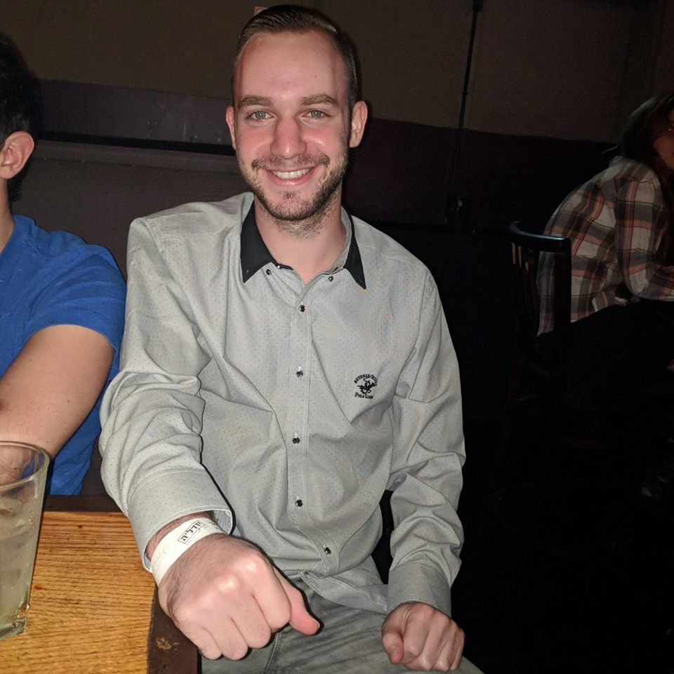
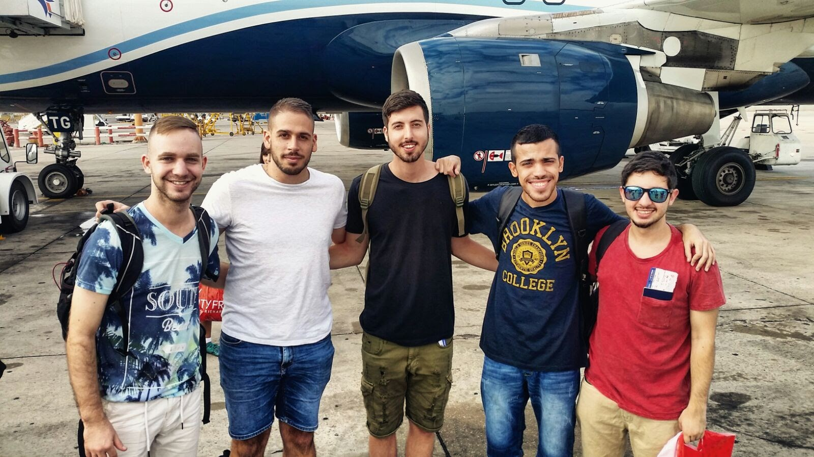
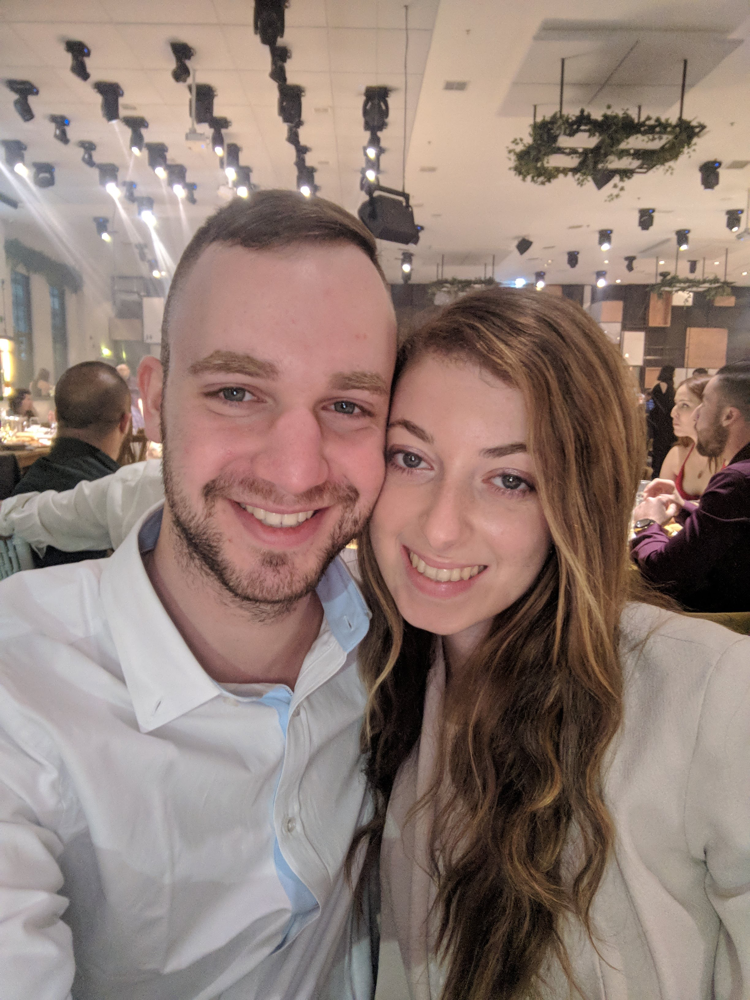

על קצה המזלג - טמיר דויטש
שמי טמיר דויטש, בן 23, גר בחולון, ורוצה לשתף בנושאים הבאים:
העסקה
בכל הקשור להעסקה, איני מועסק כרגע.
השכלה
אני בוגר מגמת ביוטכנולוגיה בתיכון קריית שרת, חולון. המגמה הייתה תובענית והיה נדרש ללמוד נושאים כמו הנדסה גנטית, תהליכי תסיסה, כימיה ונוסחאות מולקולריות, שומנים, סוכרים וכד'.
כמו כן, התקיימו שיעורי מעבדות בהן היינו עורכים ניסויים ביסודות כימיים כגון: גופרית, מי חמצן, חומצות אמיניות, מתכות קלות וכבדות. את תכנית הלימודים אמנם לא אהבתי במיוחד, אך כן ידעתי לסגל לעצמי את המידע הנדרש וגיליתי עולם מיוחד, בו אני נעזר בידע שרכשתי על מנת לדעת למשל לקרוא ולהבין רכיבים המופיעים על מוצרי צריכה, וכך ולדעת מה אני מכניס לגוף.
וידויי תחביבים ותחומי עניין
וידוי ראשון: אוהב לבלות עם החברים, יש לי חברים נהדרים ואני מרבה להימצא בחברתם ולנצל את הזמן החופשי שלנו ביחד.

יש לי גם חברה מקסימה, ענבר שמה. גם היא חלק בלתי נפרד מחיי ואני אוהב כל שנייה של שהייה איתה

וידוי שני: בעברי למדתי לנגן בפסנתר כשנתיים, מוזיקה היא מקום מפלט בשבילי ואני שומע ז'אנרים רבים שלה בעתיד אני מקווה להצליח לטוס לטומורולנד, פסטיבל המוזיקה הגדול בעולם.
וידוי שלישי: אני גם מאוד אוהב לישון, לדעת שאין דברים לעשות ובכללי להיות עם ראש נקי.קורצת לי התחושה של האחרי של הדברים, הרגע שאתה יודע שסיימת משהו.